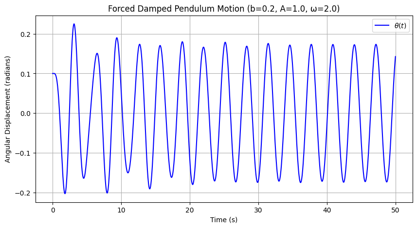

Problem 2
Investigating the Dynamics of a Forced Damped Pendulum
1. Theoretical Foundation:
Governing Equation
The motion of a forced damped pendulum is governed by the following second-order differential equation:
For small-angle approximations $$ \theta \approx \sin\theta $$the equation simplifies to:
This is a linear non-homogeneous differential equation that describes oscillatory motion with damping and external forcing.
Example: Solving for Small-Angle Oscillations
The equation simplifies to:
A trial solution for the steady-state response is:
Using the method of undetermined coefficients, we find:
Substituting the given values, we can compute $ C $ and $ D $ obtaining the particular solution.
Resonance Conditions and Energy Implications
Resonance occurs when the driving frequency $ \omega $ is close to the natural frequency $ \omega_0 $, given by: $ \omega_0 = \sqrt{\frac{g}{L}} $
For our example:
When $ \omega \approx \omega_0 $, the amplitude of oscillations increases significantly, leading to resonance.
Effects of Resonance on Energy:
- When damping is low, resonance can cause large oscillations, leading to mechanical failure.
- The total energy of the system is given by:
$$ E = \frac{1}{2} I \left( \frac{d\theta}{dt} \right)^2 + mgL(1 - \cos\theta) $$
where $ I = mL^2 $ is the moment of inertia. - In the presence of resonance, the system absorbs maximum energy from the external force, increasing kinetic and potential energy. - If damping is large, energy dissipation occurs, preventing excessive oscillations.
Conclusion
- The forced damped pendulum exhibits complex dynamics depending on damping and external forcing.
- Resonance plays a crucial role in energy transfer, influencing oscillation amplitude.
- Understanding these principles helps in engineering applications, such as seismic design, vehicle suspension systems, and wave energy harvesting.
2. Analysis of Dynamics:
Investigation of Key Parameters in Forced Damped Pendulum Motion
Influence of Damping Coefficient $ b $
The damping coefficient affects the system's energy dissipation. The equation of motion is:
where $ b \frac{d\theta}{dt} $ represents the damping force. Different values of $ b $ lead to different behaviors:
- Small $ b $ (Underdamping): The pendulum oscillates with a slow decrease in amplitude.
- Critical Damping $ b = 2\sqrt{g/L} $ The system returns to equilibrium without oscillating.
- Large $ b $ (Overdamping): Motion is slow, and the system returns to equilibrium without oscillations.
For small damping, under external forcing, the system may exhibit chaotic behavior.
Influence of Driving Frequency $ \omega $
The driving frequency $\omega $ determines the system’s response relative to its natural frequency $ \omega_0 $:
If $ \omega \ll \omega_0 $ The system does not respond effectively. If $ \omega \approx \omega_0 $ Resonance occurs, causing large oscillations. If $ \omega \gg \omega_0 $ The system cannot follow the rapid forcing, and oscillations remain small. For certain values of $ \omega $ the system transitions from periodic to chaotic motion.
Transition Between Regular and Chaotic Motion
The pendulum's motion shifts from regular (periodic) motion to chaos as system parameters change.
- Regular (Periodic) Motion: The pendulum follows a repeating trajectory.
- Quasi-Periodic Motion: The system remains structured but does not repeat exactly.
- Chaotic Motion: Small initial differences lead to drastically different results (sensitive dependence on initial conditions).
Physical Interpretation of Chaos
- Chaos emerges due to nonlinearity in the system.
- The phase space trajectory forms fractal-like structures.
- The system exhibits aperiodic oscillations, where no two cycles are identical.
- Chaotic dynamics are observed in weather systems, celestial mechanics, and turbulence.
Practical Applications:
import numpy as np
import matplotlib.pyplot as plt
from scipy.integrate import solve_ivp
import ipywidgets as widgets
from IPython.display import display
# Define the system parameters
g = 9.8 # Gravity (m/s^2)
L = 1.0 # Length of the pendulum (m)
b_default = 0.2 # Default damping coefficient
A_default = 1.0 # Default forcing amplitude
omega_default = 2.0 # Default driving frequency
# Define the differential equation system
def forced_damped_pendulum(t, y, b, A, omega):
theta, omega_theta = y # Unpack angular displacement & velocity
dtheta_dt = omega_theta
domega_dt = -b * omega_theta - (g / L) * np.sin(theta) + A * np.cos(omega * t)
return [dtheta_dt, domega_dt]
# Function to solve and plot the pendulum motion
def plot_pendulum(b, A, omega):
theta_0 = 0.1 # Initial angle (radians)
omega_0 = 0.0 # Initial angular velocity
# Time span for simulation
t_span = (0, 50) # 50 seconds
t_eval = np.linspace(t_span[0], t_span[1], 2000) # 2000 time points
# Solve the differential equation
sol = solve_ivp(forced_damped_pendulum, t_span, [theta_0, omega_0],
t_eval=t_eval, args=(b, A, omega), method='RK45')
# Extract results
t_values = sol.t
theta_values = sol.y[0]
# Plot the results
plt.figure(figsize=(10, 5))
plt.plot(t_values, theta_values, label=r'$\theta(t)$', color='b')
plt.xlabel("Time (s)")
plt.ylabel("Angular Displacement (radians)")
plt.title(f"Forced Damped Pendulum Motion (b={b}, A={A}, ω={omega})")
plt.legend()
plt.grid()
plt.show()
# Create interactive sliders
b_slider = widgets.FloatSlider(value=b_default, min=0.0, max=2.0, step=0.05, description='Damping (b)')
A_slider = widgets.FloatSlider(value=A_default, min=0.0, max=5.0, step=0.1, description='Amplitude (A)')
omega_slider = widgets.FloatSlider(value=omega_default, min=0.5, max=5.0, step=0.1, description='Frequency (ω)')
# Display interactive plot
interactive_plot = widgets.interactive(plot_pendulum, b=b_slider, A=A_slider, omega=omega_slider)
display(interactive_plot)

Meaning of Terms
1. Under-dumped
- Something that hasn't been discarded or removed enough.
- Example (Waste Management): Not enough waste has been dumped.
- Example (Relationships): Someone hasn't fully "moved on" after a breakup.
2. Undumped
- Something that hasn't been dumped or discarded at all.
- Example (Relationships): Someone who hasn't been broken up with.
3. Critically Dumbed
- Likely derived from "critically dumb", meaning extremely foolish.
- If referring to "dumbed down", it means oversimplified to an extreme level.
- Example: A complex topic explained in a way that removes important details.
4. Over-dumped
- Something has been discarded or removed too much.
- Example (Waste Management): Excessive material dumped in one place.
- Example (Relationships): Someone who has been broken up with too many times.
Forced Damped Pendulum Motion
The equation governing the motion of a forced damped pendulum is:
The plot shows the angular displacement $$ \theta(t) $$ over time for given parameters:
-
\[ b = 0.2 \]
-
\[ A = 1.0 \]
-
\[ \omega = 2.0 \]
The oscillations exhibit a transient phase followed by steady-state behavior due to the external forcing.